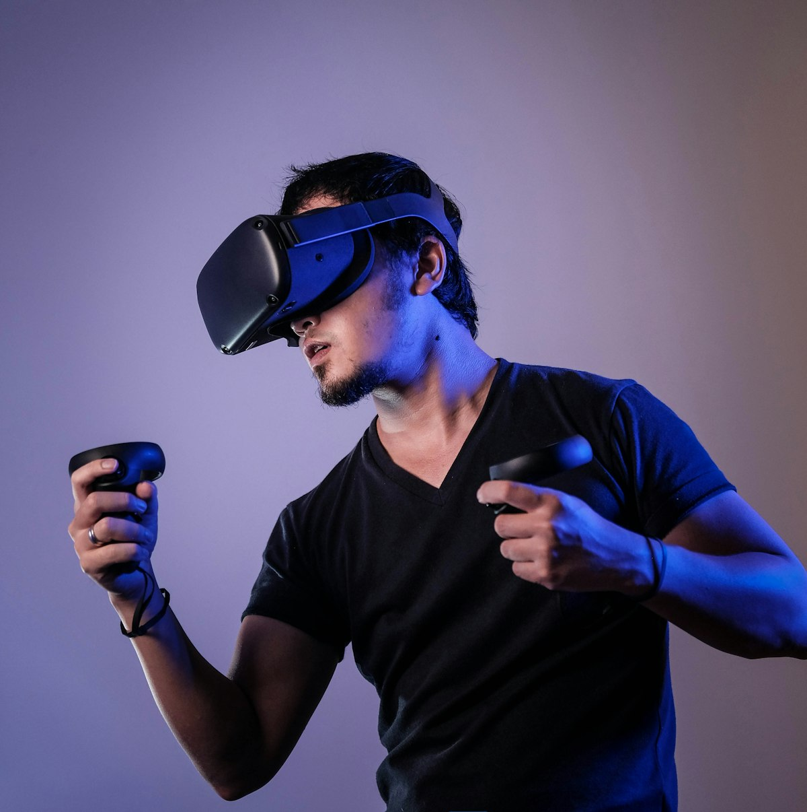
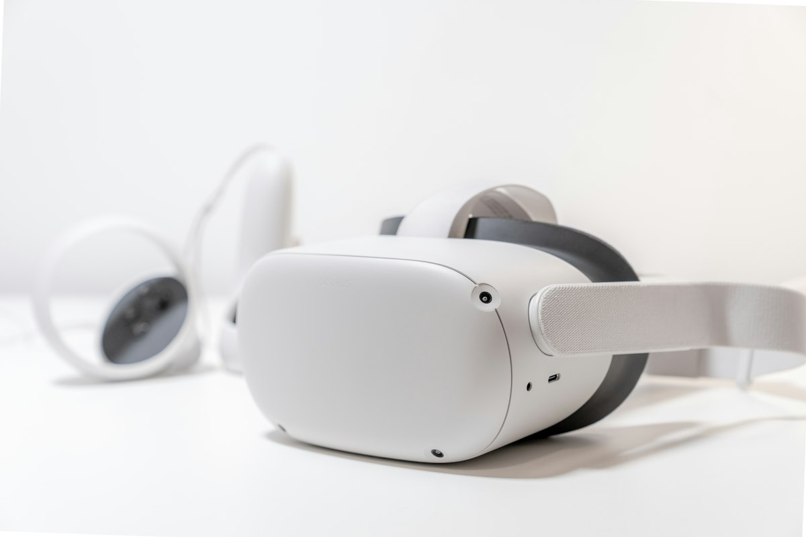

空间级回放
拖拽或陀螺仪驱动视角，像把窗户开在记忆里。支持网页与头显浏览。
Immersive Capture
双广角同步曝光，现场光线被写成可导航的空间。下山后，朋友仍能站在你当时的位置看云。
Why Orbit
旅行、展陈、房产与教学——凡是说不清的现场感，都适合用轨道视角留下来。
拖拽或陀螺仪驱动视角，像把窗户开在记忆里。支持网页与头显浏览。
折叠体积接近薄钱包，磁吸充电。开机到开录，少于两秒。
页面本身用视差讲故事：前景、主体、远山分层滚动，预告成品气质。
City Orbit
高动态范围保住霓虹与暗部。分享链接打开即是完整现场，无需安装客户端。

Specs
我们把算力留给拼缝与稳定，而不是堆砌参数表上的噱头。

演示品牌「观穹 ORBIT」为虚构产品 · 图片来自 Unsplash（本地已缓存）